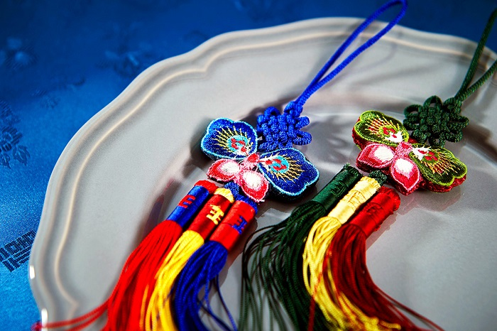

Du lịch Hàn Quốc
Welcome to Korea
Welcome to Korea
Nằm giữa 2 cung điện Gyeongbokgung và Cung điện Changdeokgung là ngôi làng cổ nổi tiếng mang tên Bukcheon Hanok đẹp như tranh vẽ. Ngôi làng là nơi tọa lạc của hơn 400 căn nhà cổ mà bạn thường thấy trong các bộ phim cổ trang Hàn Quốc. Ngôi làng cổ bên trong có nhiều quán cà phê đáng yêu, trà đạo thanh tịnh, nhà hàng và các cửa hàng lưu niệm bán các sản phẩm thủ công mỹ nghệ tinh xảo của Hàn Quốc.

Làng cổ Bukchon Hanok được xem là ngôi làng cổ đẹp nhất tại thủ đô Seoul. Ngôi làng nằm lọt thỏm giữa thủ đô Seoul sầm uất và náo nhiệt, giữa cung điện Gyeongbok, cung điện Changdeok và miếu thờ thần Jongmyo.
Ngôi làng cổ này có tất cả 900 ngôi nhà được xây dựng từ cách đây khoảng 600 năm theo một phong cách kiến trúc truyền thống cổ xưa của Hàn Quốc. Mỗi năm có hàng vạn lượt khách du lịch đến tham quan khu làng cổ Bukchon Hanok. Theo một nghiên cứu do chính quyền Seoul thực hiện vào tháng 11 năm 2011 thì khám phá những con phố cổ tại Bukchon là hoạt động được yêu thích thứ 4 của khách du lịch khi đến với thủ đô Seoul.
Làng cổ Bukchon Hanok địa chỉ nằm tại khu vực phía Bắc của thủ đô Seoul. Bạn có thể di chuyển tới đây bằng nhiều loại phương tiện khác nhau. Tuy nhiên, mọi người thường lựa chọn cách đi đến làng cổ Bukchon Hanok bằng tàu điện ngầm.
Từ trung tâm thành phố, bạn đến bến Chungmuro, bắt tuyến tàu điện ngầm số 03 màu da cam và xuống tại ga Anguk, đi ra ở cửa số 3, đi thẳng khoảng 200 mét nữa là sẽ đến làng cổ Bukchon Hanok.
Còn gì tuyệt vời hơn khi đến khám phá Bukchon Hanok lại có cơ hội được nghỉ qua đêm trong chính những căn nhà cổ kính tuyệt đẹp tại đây đúng không nào. Nếu muốn đặt phòng, bạn có thể liên hệ một số địa chỉ sau: Sky Guesthouse, Cheong Yeon Jae Hanok hoặc Dalzip Bukchon.
Cách đây khoảng 600 năm, các kiến trúc sư tài ba đã xây dựng nên ngôi làng Bukchon với một phong cách vô cùng độc đáo. Dạo quanh những con ngõ nhỏ trong làng, du khách sẽ được ngắm nhìn những mái nhà nối liền nhau tầng tầng lớp lớp và được phủ một lớp màu ghi cổ kính, mang đậm dấu ấn của thời gian. Các ngôi nhà tại đây được xây dựng theo phong cách kiến trúc bị ảnh hưởng nhiều của lối kiến trúc Trung Quốc và Nhật Bản.
Tuy khu làng cổ Bukchon Hanok hiện vẫn có người sinh sống nhưng số lượng rất ít. Đa số các ngôi nhà trong làng đều được trùng tu, sửa sang thành những điểm di tích, trung tâm văn hóa hay các cửa hàng bán đặc sản và hàng thủ công mỹ nghệ của địa phương.
Nằm ngay ở đầu làng là một ngôi nhà vô cùng nổi tiếng thu hút rất đông du khách đến tham quan mang tên Baek In-je. Thật ra đây là một viện bảo tàng, nơi mà bạn có thể tìm hiểu được kỹ hơn về văn hóa cũng như kiến trúc của đất nước Hàn Quốc. Ngôi nhà này chính thức mở cửa để đón du khách vào tham quan từ tháng 11/2015. Bạn có thể lấy một tờ giới thiệu đề vừa đi vừa đọc hoặc đăng ký một cuộc thuyết minh bằng tiếng Anh để được lắng nghe những câu chuyện kể về cuộc sống của những gia đình quý tộc sinh sống tại khu làng cổ Bukchon Hanok từ những năm đầu thế kỷ thứ 20.
Bảo tàng Baek In-je. Ảnh: tripposeNgôi nhà này được xây dựng hoàn toàn từ loại gỗ thông đen được khai thác tại vùng sông Yalu. Lối thiết kế rất đặc biệt của ngôi nhà này sẽ cho phép du khách di chuyển giữa các khu một cách dễ dàng.
Đến với làng cổ Bukchon Hanok mà không một lần check in trong những bộ trang phục Hanbok truyền thống thì quả là vô cùng đáng tiếc đấy. Bạn có thể dễ dàng thuê Hanbok ở làng Bukchon tại các cửa hàng trong làng với giá chỉ khoảng 2000 won / bộ. Khoác lên mình những bộ trang phục độc đáo, dạo bước trên những con phố nhỏ bình yên, bạn sẽ có cảm giác như được quay ngược thời gian, trở về quá khứ của Hàn Quốc hàng trăm năm về trước vậy.
Check in với những bộ hanbok truyền thống. Ảnh: PinterestMột trong những trải nghiệm rất được du khách yêu thích khi đến tham quan làng cổ Bukchon Hanok đó là được tự tay làm ra những sản phẩm thủ công truyền thống như vẽ tranh dân gian, làm vòng tay, thêu túi, nhuộm vải,… Nhìn thì có vẻ rất khó nhưng với sự hướng dẫn và chỉ bảo tận tình của người hướng dẫn là các bạn cũng sẽ có thể làm ra được những sợi dây chuyền, vòng tay hay dây đeo điện thoại vô cùng độc đáo.
Đến tham quan khu làng cổ Bukchon Hanok, bạn cũng đừng quên thưởng thức những món ăn thơm ngon và hấp dẫn tại đây như bánh gạo cay Tteok-bokki , chả cá Odeng hay gà rán xiên que Dak-kkochi,… Bạn cũng có thể ghé vào một quán cà phê nào đó, vừa nhâm nhi một tách cà phê vừa học cách làm những cốc nến hand-made với nhiều mùi hương độc đáo khác nhau.
Bukchon Hanok được bình chọn là ngôi làng cổ đẹp nhất tại thủ đô Seoul. Nếu muốn có một chuyến du lịch Hàn Quốc thật trọn vẹn và đáng nhớ, bạn đừng bỏ qua cơ hội ghé thăm ngôi làng cổ tuyệt đẹp này nhé.
GỢI Ý TOUR DU LỊCH HÀN QUỐC |
|---|
>> Du Lịch Hàn Quốc: Hà Nội – Seoul – Lotte World – Trượt Tuyết Jangjipine 5 Ngày Trượt Tuyết Bay Jeju Air chỉ với 12.500.000 đồng
|
Top 20 điểm tham quan nhất định phải ghé thăm trong hành trình chinh phục Seoul

Điện thoại: 0903357616
Email: thaontps24690@fpt.edu.vn